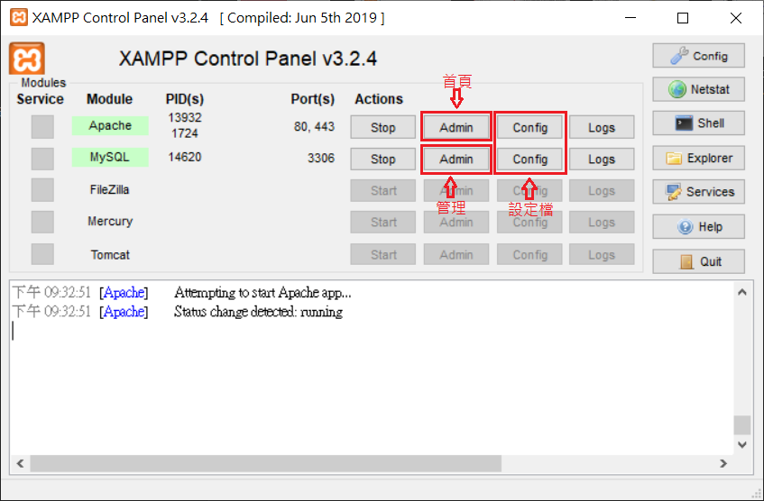

<!DOCTYPE html>
<html>
<head><meta name="generator" content="Hexo 3.8.0">
  <meta charset="utf-8">
  
  <title>Web伺服器安裝(XAMPP)-Windows | Mars&#39;s Blog</title>
  <meta name="viewport" content="width=device-width, initial-scale=1, maximum-scale=1">
  <meta name="description" content="一、說明安裝網頁執行平台，以供開發作業 很多人都知道，windows有不少PHP開發環境的安裝包，如xampp, appserv, wamp，雖然一個成熟的開發者，是不會用和線上不一樣的環境開發的，但入門時可安裝這些套件來學習開發。 二、環境 windows xampp 7.1 Apache 2.4 MariaDB 10.4 PHP 7.1    三、安裝 前往XAMPP官網下載 下載window">
<meta name="keywords" content="web,php,server,windows,apache,mysql">
<meta property="og:type" content="article">
<meta property="og:title" content="Web伺服器安裝(XAMPP)-Windows">
<meta property="og:url" content="https://blog.mars-world.net/2019/11/14/web-server-xampp-install/index.html">
<meta property="og:site_name" content="Mars&#39;s Blog">
<meta property="og:description" content="一、說明安裝網頁執行平台，以供開發作業 很多人都知道，windows有不少PHP開發環境的安裝包，如xampp, appserv, wamp，雖然一個成熟的開發者，是不會用和線上不一樣的環境開發的，但入門時可安裝這些套件來學習開發。 二、環境 windows xampp 7.1 Apache 2.4 MariaDB 10.4 PHP 7.1    三、安裝 前往XAMPP官網下載 下載window">
<meta property="og:locale" content="default">
<meta property="og:image" content="https://blog.mars-world.net/2019/11/14/web-server-xampp-install/01-xampp-download.png">
<meta property="og:image" content="https://blog.mars-world.net/2019/11/14/web-server-xampp-install/01-xampp-install-01.png">
<meta property="og:image" content="https://blog.mars-world.net/2019/11/14/web-server-xampp-install/01-xampp-install-02.png">
<meta property="og:image" content="https://blog.mars-world.net/2019/11/14/web-server-xampp-install/01-xampp-install-03.png">
<meta property="og:image" content="https://blog.mars-world.net/2019/11/14/web-server-xampp-install/01-xampp-install-04.png">
<meta property="og:image" content="https://blog.mars-world.net/2019/11/14/web-server-xampp-install/01-xampp-install-05.png">
<meta property="og:image" content="https://blog.mars-world.net/2019/11/14/web-server-xampp-install/01-xampp-install-06.png">
<meta property="og:image" content="https://blog.mars-world.net/2019/11/14/web-server-xampp-install/01-xampp-install-07.png">
<meta property="og:image" content="https://blog.mars-world.net/2019/11/14/web-server-xampp-install/01-xampp-install-08.png">
<meta property="og:image" content="https://blog.mars-world.net/2019/11/14/web-server-xampp-install/01-xampp-install-09.png">
<meta property="og:image" content="https://blog.mars-world.net/2019/11/14/web-server-xampp-install/01-xampp-install-10.png">
<meta property="og:image" content="https://blog.mars-world.net/2019/11/14/web-server-xampp-install/01-xampp-install-11.png">
<meta property="og:image" content="https://blog.mars-world.net/2019/11/14/web-server-xampp-install/02-xampp-setting-01.png">
<meta property="og:image" content="https://blog.mars-world.net/2019/11/14/web-server-xampp-install/02-xampp-setting-02.png">
<meta property="og:image" content="https://blog.mars-world.net/2019/11/14/web-server-xampp-install/02-xampp-setting-03.png">
<meta property="og:updated_time" content="2019-11-14T15:00:51.347Z">
<meta name="twitter:card" content="summary">
<meta name="twitter:title" content="Web伺服器安裝(XAMPP)-Windows">
<meta name="twitter:description" content="一、說明安裝網頁執行平台，以供開發作業 很多人都知道，windows有不少PHP開發環境的安裝包，如xampp, appserv, wamp，雖然一個成熟的開發者，是不會用和線上不一樣的環境開發的，但入門時可安裝這些套件來學習開發。 二、環境 windows xampp 7.1 Apache 2.4 MariaDB 10.4 PHP 7.1    三、安裝 前往XAMPP官網下載 下載window">
<meta name="twitter:image" content="https://blog.mars-world.net/2019/11/14/web-server-xampp-install/01-xampp-download.png">
  
  
  
    <link href="//fonts.googleapis.com/css?family=Source+Code+Pro" rel="stylesheet" type="text/css">
  

  <link rel="stylesheet" href="https://maxcdn.bootstrapcdn.com/bootstrap/3.3.6/css/bootstrap.min.css" integrity="sha384-1q8mTJOASx8j1Au+a5WDVnPi2lkFfwwEAa8hDDdjZlpLegxhjVME1fgjWPGmkzs7" crossorigin="anonymous">

  <link rel="stylesheet" href="https://maxcdn.bootstrapcdn.com/font-awesome/4.5.0/css/font-awesome.min.css" integrity="sha384-XdYbMnZ/QjLh6iI4ogqCTaIjrFk87ip+ekIjefZch0Y+PvJ8CDYtEs1ipDmPorQ+" crossorigin="anonymous">

  <link rel="stylesheet" href="/css/styles.css">
  

</head>
</html>
<body>
  <nav class="navbar navbar-inverse">
  <div class="container">
    <!-- Brand and toggle get grouped for better mobile display -->
    <div class="navbar-header">
      <button type="button" class="navbar-toggle collapsed" data-toggle="collapse" data-target="#main-menu-navbar" aria-expanded="false">
        <span class="sr-only">Toggle navigation</span>
        <span class="icon-bar"></span>
        <span class="icon-bar"></span>
        <span class="icon-bar"></span>
      </button>
      
    </div>

    <!-- Collect the nav links, forms, and other content for toggling -->
    <div class="collapse navbar-collapse" id="main-menu-navbar">
      <ul class="nav navbar-nav">
        
          <li><a class href="/index.html">Home</a></li>
        
          <li><a class href="/archives/">Archives</a></li>
        
          <li><a class href="https://github.com/marshung24">GitHub</a></li>
        
      </ul>

      <!--
      <ul class="nav navbar-nav navbar-right">
        
      </ul>
      -->
    </div><!-- /.navbar-collapse -->
  </div><!-- /.container-fluid -->
</nav>

  <div class="container">
    <div class="blog-header">
  <h1 class="blog-title">Mars&#39;s Blog</h1>
  
    <p class="lead blog-description">Mars&#39;s learning record</p>
  
</div>

    <div class="row">
        <div class="col-sm-8 blog-main">
          <article id="post-web-server-xampp-install" class="article article-type-post" itemscope itemprop="blogPost">

  <header class="article-header">
    
  
    <h1 class="article-title" itemprop="name">
      Web伺服器安裝(XAMPP)-Windows
    </h1>
  


  </header>

  <div class="article-meta">
    <div class="article-datetime">
  <a href="/2019/11/14/web-server-xampp-install/" class="article-date"><time datetime="2019-11-14T13:00:37.000Z" itemprop="datePublished">2019-11-14</time></a>
</div>

    <div class="article-author">Mars Hung</div>
    
  <div class="article-category">
    <a class="article-category-link" href="/categories/server/">server</a>
  </div>


    <div class="article-reading">
  
  <span id="busuanzi_container_page_pv">文章閱讀量<span id="busuanzi_value_page_pv"></span>次</span>
  
</div>

  </div>
  <div class="article-inner">

    <div class="article-entry" itemprop="articleBody">
      
        
<div id="toc">
    <ol class="toc"><li class="toc-item toc-level-1"><a class="toc-link" href="#一、說明"><span class="toc-text">一、說明</span></a></li><li class="toc-item toc-level-1"><a class="toc-link" href="#二、環境"><span class="toc-text">二、環境</span></a></li><li class="toc-item toc-level-1"><a class="toc-link" href="#三、安裝"><span class="toc-text">三、安裝</span></a></li><li class="toc-item toc-level-1"><a class="toc-link" href="#四、設定"><span class="toc-text">四、設定</span></a><ol class="toc-child"><li class="toc-item toc-level-2"><a class="toc-link" href="#4-1-增加虛擬站台"><span class="toc-text">4.1 增加虛擬站台</span></a></li><li class="toc-item toc-level-2"><a class="toc-link" href="#4-2-設定DNS解析"><span class="toc-text">4.2 設定DNS解析</span></a></li></ol></li><li class="toc-item toc-level-1"><a class="toc-link" href="#五、檢視成果"><span class="toc-text">五、檢視成果</span></a></li></ol>
</div>

        <h1 id="一、說明"><a href="#一、說明" class="headerlink" title="一、說明"></a>一、說明</h1><p>安裝網頁執行平台，以供開發作業</p>
<p>很多人都知道，windows有不少PHP開發環境的安裝包，如xampp, appserv, wamp，雖然一個成熟的開發者，是不會用和線上不一樣的環境開發的，但入門時可安裝這些套件來學習開發。</p>
<h1 id="二、環境"><a href="#二、環境" class="headerlink" title="二、環境"></a>二、環境</h1><ul>
<li>windows</li>
<li>xampp 7.1<ul>
<li>Apache 2.4</li>
<li>MariaDB 10.4</li>
<li>PHP 7.1</li>
</ul>
</li>
</ul>
<h1 id="三、安裝"><a href="#三、安裝" class="headerlink" title="三、安裝"></a>三、安裝</h1><ul>
<li>前往<a href="https://www.apachefriends.org/download.html" target="_blank" rel="noopener">XAMPP官網</a>下載<br><blockquote>
<p>下載windows版安裝檔</p>
</blockquote>
</li>
<li>安裝軟體<br></li>
<li>選擇安裝內容<br></li>
<li>選擇安裝目錄<br></li>
<li>過程<br><br><br></li>
<li>開啟防火牆<br></li>
<li>安裝結束，啟動管理面版<br><br><br><blockquote>
<p>啟動伺服器</p>
</blockquote>
</li>
<li>設定與管理<br></li>
</ul>
<h1 id="四、設定"><a href="#四、設定" class="headerlink" title="四、設定"></a>四、設定</h1><h2 id="4-1-增加虛擬站台"><a href="#4-1-增加虛擬站台" class="headerlink" title="4.1 增加虛擬站台"></a>4.1 增加虛擬站台</h2><ul>
<li>打開設定檔 D:\xampp\apache\conf\extra\httpd-vhosts.conf</li>
<li><p>新增設定</p>
<figure class="highlight plain"><table><tr><td class="gutter"><pre><span class="line">1</span><br><span class="line">2</span><br><span class="line">3</span><br><span class="line">4</span><br><span class="line">5</span><br><span class="line">6</span><br><span class="line">7</span><br><span class="line">8</span><br><span class="line">9</span><br></pre></td><td class="code"><pre><span class="line">&lt;VirtualHost *:80&gt;</span><br><span class="line">  DocumentRoot &quot;D:/xampp/htdocs/site1&quot;</span><br><span class="line">  ServerName site1.dev.idv</span><br><span class="line">&lt;/VirtualHost&gt;</span><br><span class="line"></span><br><span class="line">&lt;VirtualHost *:80&gt;</span><br><span class="line">  DocumentRoot &quot;D:/xampp/htdocs/site2&quot;</span><br><span class="line">  ServerName site2.dev.idv</span><br><span class="line">&lt;/VirtualHost&gt;</span><br></pre></td></tr></table></figure>
<p></p>
</li>
<li>新增虛擬站台工作目錄<br><blockquote>
<p>在 D:/xampp/htdocs/ 中新增目錄 site1, site2</p>
</blockquote>
</li>
<li><p>增加站台首頁檔</p>
<ul>
<li><p>Site1<br>檔案：D:/xampp/htdocs/site1/index.php<br>內容</p>
<figure class="highlight plain"><table><tr><td class="gutter"><pre><span class="line">1</span><br><span class="line">2</span><br></pre></td><td class="code"><pre><span class="line">&lt;?php</span><br><span class="line">echo &quot;Hello Site 1...&quot;;</span><br></pre></td></tr></table></figure>
</li>
<li><p>Site2<br>檔案：D:/xampp/htdocs/site2/index.php<br>內容</p>
<figure class="highlight plain"><table><tr><td class="gutter"><pre><span class="line">1</span><br><span class="line">2</span><br></pre></td><td class="code"><pre><span class="line">&lt;?php</span><br><span class="line">echo &quot;Hello Site 2...&quot;;</span><br></pre></td></tr></table></figure>
</li>
</ul>
</li>
</ul>
<h2 id="4-2-設定DNS解析"><a href="#4-2-設定DNS解析" class="headerlink" title="4.2 設定DNS解析"></a>4.2 設定DNS解析</h2><ul>
<li>如果你的域名不是DNS可查到的，請在作業系統的hosts中增加解譯規則</li>
<li>使用記事本打開 C:\Windows\System32\drivers\etc\hosts (需用管理者權限打開)</li>
<li>在檔案最下方增加二行設定<ul>
<li>127.0.0.1 site1.dev.idv</li>
<li>127.0.0.1 site2.dev.idv<br></li>
</ul>
</li>
</ul>
<h1 id="五、檢視成果"><a href="#五、檢視成果" class="headerlink" title="五、檢視成果"></a>五、檢視成果</h1><ul>
<li>查看網站Site1：<a href="http://site1.dev.idv" target="_blank" rel="noopener">http://site1.dev.idv</a></li>
<li>查看網站Site2：<a href="http://site2.dev.idv" target="_blank" rel="noopener">http://site2.dev.idv</a></li>
<li>資料庫管理介面：<a href="http://localhost/phpmyadmin" target="_blank" rel="noopener">http://localhost/phpmyadmin</a></li>
</ul>

      
    </div>

    
      

    

    <footer class="article-footer">
      <a data-url="https://blog.mars-world.net/2019/11/14/web-server-xampp-install/" data-id="ck2yuxear000ywkufs9aranoo" class="article-share-link">
        <i class="fa fa-share"></i> Share
      </a>
      
      
  <ul class="article-tag-list"><li class="article-tag-list-item"><a class="article-tag-list-link" href="/tags/apache/">apache</a></li><li class="article-tag-list-item"><a class="article-tag-list-link" href="/tags/mysql/">mysql</a></li><li class="article-tag-list-item"><a class="article-tag-list-link" href="/tags/php/">php</a></li><li class="article-tag-list-item"><a class="article-tag-list-link" href="/tags/server/">server</a></li><li class="article-tag-list-item"><a class="article-tag-list-link" href="/tags/web/">web</a></li><li class="article-tag-list-item"><a class="article-tag-list-link" href="/tags/windows/">windows</a></li></ul>


    </footer>
  </div>
  
    
<ul id="article-nav" class="nav nav-pills nav-justified">
  
  <li role="presentation">
    <a href="/2019/08/18/crud-design-04/" id="article-nav-older" class="article-nav-link-wrap">
      <i class="fa fa-chevron-left pull-left"></i>
      <span class="article-nav-link-title">CRUD表單設計 Day-04 Javascript</span>
    </a>
  </li>
  
  
</ul>


  
</article>


        </div>
        <div class="col-sm-3 col-sm-offset-1 blog-sidebar">
          
  
  <div class="sidebar-module">
    <h4>Recents</h4>
    <ul class="sidebar-module-list">
      
        <li>
          <a href="/2019/11/14/web-server-xampp-install/">Web伺服器安裝(XAMPP)-Windows</a>
        </li>
      
        <li>
          <a href="/2019/08/18/crud-design-04/">CRUD表單設計 Day-04 Javascript</a>
        </li>
      
        <li>
          <a href="/2019/08/17/crud-design-03/">CRUD表單設計 Day-03 安裝Bootstrap4</a>
        </li>
      
        <li>
          <a href="/2019/08/16/php-training/">PHP培訓-CRUD</a>
        </li>
      
        <li>
          <a href="/2019/08/16/crud-design-02/">CRUD表單設計 Day-02 安裝PHP Framework</a>
        </li>
      
    </ul>
  </div>


  
  <div class="sidebar-module">
    <h4>Archives</h4>
    <ul class="sidebar-module-list"><li class="sidebar-module-list-item"><a class="sidebar-module-list-link" href="/archives/2019/11/">November 2019</a><span class="sidebar-module-list-count">1</span></li><li class="sidebar-module-list-item"><a class="sidebar-module-list-link" href="/archives/2019/08/">August 2019</a><span class="sidebar-module-list-count">4</span></li><li class="sidebar-module-list-item"><a class="sidebar-module-list-link" href="/archives/2019/07/">July 2019</a><span class="sidebar-module-list-count">6</span></li><li class="sidebar-module-list-item"><a class="sidebar-module-list-link" href="/archives/2019/06/">June 2019</a><span class="sidebar-module-list-count">1</span></li><li class="sidebar-module-list-item"><a class="sidebar-module-list-link" href="/archives/2019/05/">May 2019</a><span class="sidebar-module-list-count">4</span></li><li class="sidebar-module-list-item"><a class="sidebar-module-list-link" href="/archives/2019/04/">April 2019</a><span class="sidebar-module-list-count">2</span></li><li class="sidebar-module-list-item"><a class="sidebar-module-list-link" href="/archives/2017/09/">September 2017</a><span class="sidebar-module-list-count">2</span></li></ul>
  </div>


  
  <div class="sidebar-module">
    <h4>Categories</h4>
    <ul class="sidebar-module-list"><li class="sidebar-module-list-item"><a class="sidebar-module-list-link" href="/categories/doc/">doc</a><span class="sidebar-module-list-count">2</span></li><li class="sidebar-module-list-item"><a class="sidebar-module-list-link" href="/categories/info/">info</a><span class="sidebar-module-list-count">3</span></li><li class="sidebar-module-list-item"><a class="sidebar-module-list-link" href="/categories/security/">security</a><span class="sidebar-module-list-count">1</span></li><li class="sidebar-module-list-item"><a class="sidebar-module-list-link" href="/categories/server/">server</a><span class="sidebar-module-list-count">2</span></li><li class="sidebar-module-list-item"><a class="sidebar-module-list-link" href="/categories/test/">test</a><span class="sidebar-module-list-count">1</span></li><li class="sidebar-module-list-item"><a class="sidebar-module-list-link" href="/categories/tools/">tools</a><span class="sidebar-module-list-count">5</span></li><li class="sidebar-module-list-item"><a class="sidebar-module-list-link" href="/categories/training/">training</a><span class="sidebar-module-list-count">5</span></li><li class="sidebar-module-list-item"><a class="sidebar-module-list-link" href="/categories/web/">web</a><span class="sidebar-module-list-count">1</span></li></ul>
  </div>


  
  <div class="sidebar-module">
    <h4>Tags</h4>
    <ul class="sidebar-module-list"><li class="sidebar-module-list-item"><a class="sidebar-module-list-link" href="/tags/account/">account</a><span class="sidebar-module-list-count">1</span></li><li class="sidebar-module-list-item"><a class="sidebar-module-list-link" href="/tags/ajax/">ajax</a><span class="sidebar-module-list-count">1</span></li><li class="sidebar-module-list-item"><a class="sidebar-module-list-link" href="/tags/apache/">apache</a><span class="sidebar-module-list-count">1</span></li><li class="sidebar-module-list-item"><a class="sidebar-module-list-link" href="/tags/blog/">blog</a><span class="sidebar-module-list-count">1</span></li><li class="sidebar-module-list-item"><a class="sidebar-module-list-link" href="/tags/bootstrap/">bootstrap</a><span class="sidebar-module-list-count">1</span></li><li class="sidebar-module-list-item"><a class="sidebar-module-list-link" href="/tags/codeingiter/">codeingiter</a><span class="sidebar-module-list-count">1</span></li><li class="sidebar-module-list-item"><a class="sidebar-module-list-link" href="/tags/coding/">coding</a><span class="sidebar-module-list-count">5</span></li><li class="sidebar-module-list-item"><a class="sidebar-module-list-link" href="/tags/composer/">composer</a><span class="sidebar-module-list-count">1</span></li><li class="sidebar-module-list-item"><a class="sidebar-module-list-link" href="/tags/debug/">debug</a><span class="sidebar-module-list-count">1</span></li><li class="sidebar-module-list-item"><a class="sidebar-module-list-link" href="/tags/dev/">dev</a><span class="sidebar-module-list-count">17</span></li><li class="sidebar-module-list-item"><a class="sidebar-module-list-link" href="/tags/doc/">doc</a><span class="sidebar-module-list-count">3</span></li><li class="sidebar-module-list-item"><a class="sidebar-module-list-link" href="/tags/env/">env</a><span class="sidebar-module-list-count">1</span></li><li class="sidebar-module-list-item"><a class="sidebar-module-list-link" href="/tags/git/">git</a><span class="sidebar-module-list-count">2</span></li><li class="sidebar-module-list-item"><a class="sidebar-module-list-link" href="/tags/github/">github</a><span class="sidebar-module-list-count">1</span></li><li class="sidebar-module-list-item"><a class="sidebar-module-list-link" href="/tags/hexo/">hexo</a><span class="sidebar-module-list-count">1</span></li><li class="sidebar-module-list-item"><a class="sidebar-module-list-link" href="/tags/ide/">ide</a><span class="sidebar-module-list-count">1</span></li><li class="sidebar-module-list-item"><a class="sidebar-module-list-link" href="/tags/info/">info</a><span class="sidebar-module-list-count">3</span></li><li class="sidebar-module-list-item"><a class="sidebar-module-list-link" href="/tags/javascript/">javascript</a><span class="sidebar-module-list-count">2</span></li><li class="sidebar-module-list-item"><a class="sidebar-module-list-link" href="/tags/jquery/">jquery</a><span class="sidebar-module-list-count">1</span></li><li class="sidebar-module-list-item"><a class="sidebar-module-list-link" href="/tags/linux/">linux</a><span class="sidebar-module-list-count">2</span></li><li class="sidebar-module-list-item"><a class="sidebar-module-list-link" href="/tags/mysql/">mysql</a><span class="sidebar-module-list-count">2</span></li><li class="sidebar-module-list-item"><a class="sidebar-module-list-link" href="/tags/nginx/">nginx</a><span class="sidebar-module-list-count">2</span></li><li class="sidebar-module-list-item"><a class="sidebar-module-list-link" href="/tags/nodejs/">nodejs</a><span class="sidebar-module-list-count">1</span></li><li class="sidebar-module-list-item"><a class="sidebar-module-list-link" href="/tags/php/">php</a><span class="sidebar-module-list-count">9</span></li><li class="sidebar-module-list-item"><a class="sidebar-module-list-link" href="/tags/phpunit/">phpunit</a><span class="sidebar-module-list-count">1</span></li><li class="sidebar-module-list-item"><a class="sidebar-module-list-link" href="/tags/security/">security</a><span class="sidebar-module-list-count">1</span></li><li class="sidebar-module-list-item"><a class="sidebar-module-list-link" href="/tags/server/">server</a><span class="sidebar-module-list-count">2</span></li><li class="sidebar-module-list-item"><a class="sidebar-module-list-link" href="/tags/setting/">setting</a><span class="sidebar-module-list-count">1</span></li><li class="sidebar-module-list-item"><a class="sidebar-module-list-link" href="/tags/sop/">sop</a><span class="sidebar-module-list-count">2</span></li><li class="sidebar-module-list-item"><a class="sidebar-module-list-link" href="/tags/standard/">standard</a><span class="sidebar-module-list-count">2</span></li><li class="sidebar-module-list-item"><a class="sidebar-module-list-link" href="/tags/style/">style</a><span class="sidebar-module-list-count">1</span></li><li class="sidebar-module-list-item"><a class="sidebar-module-list-link" href="/tags/test/">test</a><span class="sidebar-module-list-count">2</span></li><li class="sidebar-module-list-item"><a class="sidebar-module-list-link" href="/tags/tools/">tools</a><span class="sidebar-module-list-count">5</span></li><li class="sidebar-module-list-item"><a class="sidebar-module-list-link" href="/tags/trace/">trace</a><span class="sidebar-module-list-count">1</span></li><li class="sidebar-module-list-item"><a class="sidebar-module-list-link" href="/tags/training/">training</a><span class="sidebar-module-list-count">5</span></li><li class="sidebar-module-list-item"><a class="sidebar-module-list-link" href="/tags/unit-test/">unit test</a><span class="sidebar-module-list-count">1</span></li><li class="sidebar-module-list-item"><a class="sidebar-module-list-link" href="/tags/vscode/">vscode</a><span class="sidebar-module-list-count">1</span></li><li class="sidebar-module-list-item"><a class="sidebar-module-list-link" href="/tags/web/">web</a><span class="sidebar-module-list-count">8</span></li><li class="sidebar-module-list-item"><a class="sidebar-module-list-link" href="/tags/windows/">windows</a><span class="sidebar-module-list-count">1</span></li></ul>
  </div>


        </div>
    </div>
  </div>
  <footer class="blog-footer">
  <div class="container">
    <div id="footer-info" class="inner">
      &copy; 2019 Mars Hung Powered by <a href="http://hexo.io/" target="_blank">Hexo</a>
    </div>
  
  
    <script async src="//busuanzi.ibruce.info/busuanzi/2.3/busuanzi.pure.mini.js"></script>
    <span id="busuanzi_container_site_pv">總訪問量<span id="busuanzi_value_site_pv"></span>次</span>
    <span class="post-meta-divider">|</span>
    <span id="busuanzi_container_site_uv">訪客數<span id="busuanzi_value_site_uv"></span>人</span>
  
  </div>
</footer>

  

<script src="https://ajax.googleapis.com/ajax/libs/jquery/2.1.4/jquery.min.js" integrity="sha384-8gBf6Y4YYq7Jx97PIqmTwLPin4hxIzQw5aDmUg/DDhul9fFpbbLcLh3nTIIDJKhx" crossorigin="anonymous"></script>

<script src="https://maxcdn.bootstrapcdn.com/bootstrap/3.3.6/js/bootstrap.min.js" integrity="sha384-0mSbJDEHialfmuBBQP6A4Qrprq5OVfW37PRR3j5ELqxss1yVqOtnepnHVP9aJ7xS" crossorigin="anonymous"></script>


<script src="/js/script.js"></script>

</body>
</html>
